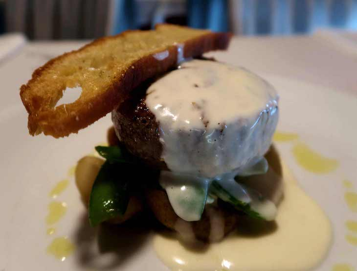
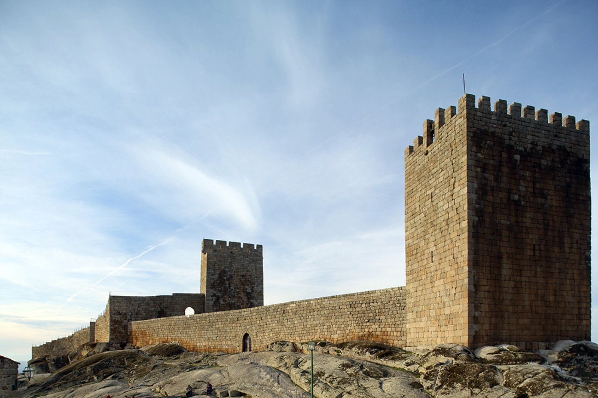
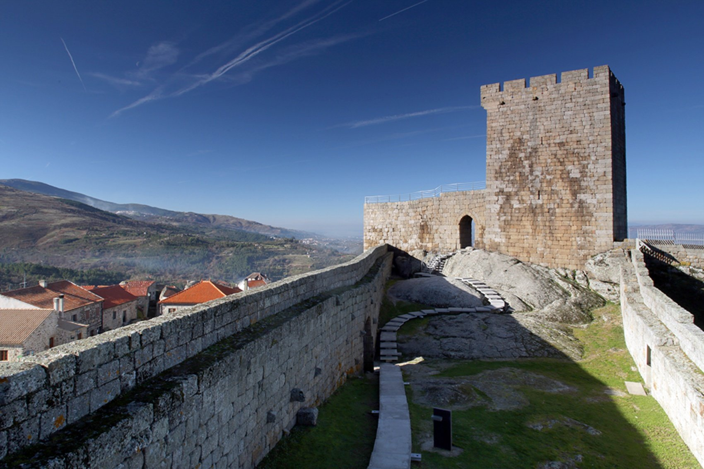
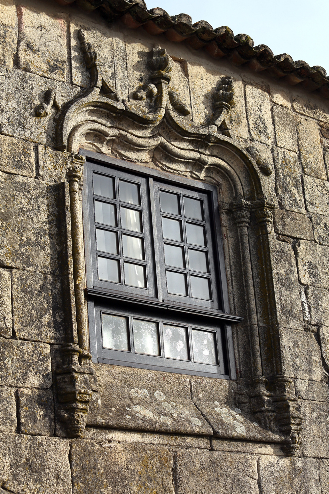
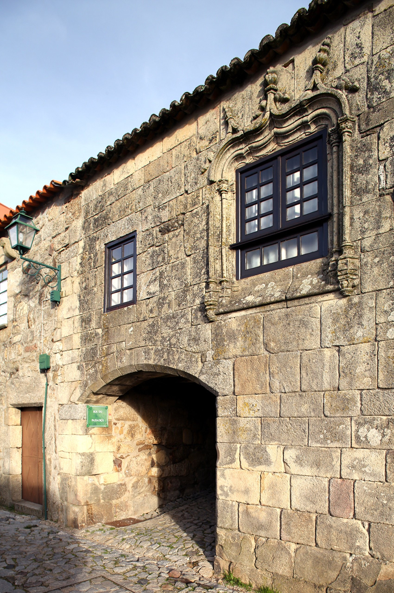

Linhares da Beira
Sobre
Aldeia medieval do século XII, Linhares da Beira possui uma diversidade arquitetónica e artística ímpar, fruto do legado de várias épocas. Em 1169, recebeu o seu primeiro foral, atribuído por D. Afonso Henriques. Mas só mais tarde, no reinado de D. Dinis, foi erigido o seu imponente Castelo, ex-líbris da aldeia e principal cartão de visita nos nossos dias. Deambular pelas ruas desta aldeia museu é fazer uma incursão ao passado, à sua história, e sentir a brisa do Vale do Mondego a acariciar-nos o rosto.

História

Vila de fundação medieval, com foral concedido em 1169 por D. Afonso Henriques, que, em 1855 perde este estatuto com a reforma administrativa liberal. Apesar do local ter conhecido a fixação de povos pré-romanos e existir registo escrito da passagem de romanos, visigodos e muçulmanos, a história de Linhares, tem origem no contexto gerado com a reconquista Cristã. Estabilizadas as fronteiras do reino português, Linhares continuou a ter significado estratégico pelo menos até ao século XVII, pois fazia parte do sistema defensivo que guardava a Bacia do Mondego, na retaguarda das fortificações da raia beirã.

A estrutura de ocupação do espaço da antiga vila de Linhares conjuga assim um tipo característico de povoamento medieval (séculos XII-XIV), com desenvolvimentos significativos no período quinhentista (século XVI). Nesta centúria a vila terá atingido uma configuração próxima da atual, ainda que no património edificado pesem, pelo impacto no tecido urbano, algumas construções mais tardias (séculos XVII-XIX).

O castelo, implantado num cabeço rochoso a cerca de 820 m de altitude e dominando o Vale do Mondego, constitui o núcleo gerador do aglomerado. Na encosta, sobranceira à várzea de Linhares e cruzada por antiga via romana, estendeu-se a povoação: o sistema fortificado, entregue a um alcaide e dispondo de pequena guarnição militar, defendia um território bem como a sua população e bens; o foral, concedido pelo Rei, prescrevia a autonomia concelhia e organizava a vida económica e social do povoado; a Igreja estabeleceu as paróquias.

A vila descreve, no sopé do Castelo, um perímetro triangular, em cujos vértices se situam três espaços ordenadores da malha urbana: o Lg. da Misericórdia, à entrada da povoação; o Lg. de S. Pedro, na zona denominada “Cimo da Vila”; e o Lg. da Igreja, próximo do Castelo e no acesso ao Campo da Corredoura, terreno de usufruto comum. Estes largos definiram-se em torno de igrejas – hoje desaparecida a de S. Pedro – e constituíam o centro das paróquias de fundação medieval. Na base do triângulo e no ponto oposto à Matriz, localiza-se o Lg. do Pelourinho, outrora o centro cívico da Vila.
Da assistência ao peregrino, pobres e doentes sobra-nos o edifício do Lg. da Misericórdia, que acolheu duas instituições típicas da sociedade medieval e moderna – a Albergaria e o Hospital. Também do abastecimento de água, temos para observar três fontes dos séculos XII, XVI e XIX.
O que ver